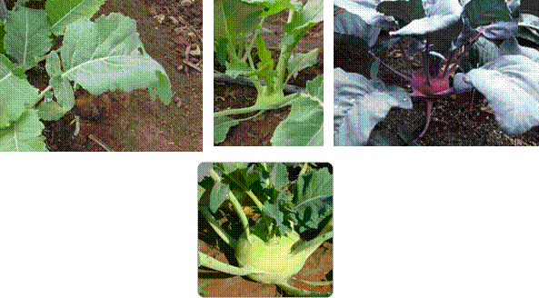

HORT 281 :: Lecture 14 :: ORIGIN, AREA, PRODUCTION, VARIETIES, PACKAGE OF PRACTICES FOR COLE CROPS – KNOL- KHOL

Origin, area, production, varieties, package of practices for COLE CROPS – KNOL- kHOL
Brassica oleracea var. gongylodes
Knol-khol (Brassica oleracea var. gongylodes) is known by many names in India. It is popular in Kashmir, West Bengal, Maharashtra, Assam, Uttar Pradesh, Punjab and some parts of south India, but it is not cultivated commercially. It is characterized by the formation of knob (tuber) which arises from a thickening of the stem tissue above the cotyledons. The fleshy turnip-like enlargement of the stem develops entirely above the ground. This knob is harvested for human consumption as raw or cooked vegetable, though in some parts, young leaves are also used.
Climate and soil
Knol-khol thrives best in a relatively cool, moist climate. In temperate regions, the early varieties are sensitive to early bolting but under subtropical conditions, this problem is not much since the vernalization effect of low night temperature is counteracted by high temperatures during the day with the result that mean temperature hardly goes below 10°C. The high temperature after planting delays the bolting of plants that have been vernalized on the seed bed. It grows well with a monthly average temperature of 15°–20°C, maximum and minimum average being 24°C and 4.5°C. In late varieties, low temperature does not have stimulating effect on bolting in early stages. It is vernalized in the later stages only as other biennial cole crops when the plant has made some growth. It can withstand extreme cold and frost better than other cool season crops.
Varieties that are susceptible to bolting lack a juvenile phase and become generative without producing knobs if exposed after germination to low temperature. When the low temperature occurs at the knob formation stage, the round and flat round varieties produce long oval-shaped knobs. The low temperature or frost conditions sometimes develop the anthocyanin pigments on knobs or plant parts. These pigments are intensified, if there is lack of N and P in soil, deteriorating the quality of knobs, especially of green types.
Knol-khol can be grown on all types of soils. A soil rich in manures and fertilizers produces excellent knobs. Sandy loam is ideal for an early crop and clay or silt loam for higher yield and late crop. It does not grow well in highly acidic soil. The optimum pH is 5.5–6.8.
Varieties
Some of the promising varieties available in India are Sutton's Earliest Purple (Sutton), Golith White (Sadashiv), Early White Vienna, King of the Market and Early Purple Vienna (Verma, Pocha). Although research stations and some private seed companies are engaged in testing and maintenance of varieties, no serious attempt has been made for the improvement of the crop as the available introductions are well-suited to our conditions. The recommended varieties are:
King of North
It has a plant height of 20–30cm foliage is dark green, knob flattish-round, leaf sheath large and well-spread over the knob. It matures 60–65 days after transplanting.
In Europe, Wiesmoor Forcing White and Gaugels Forcing White are resistant to bolting and mature 30–45 days after planting. These are early varieties characterized by the horizontal position of the lower leaves. The late varieties mature 70–100 days after planting. The earliest variety in this group is Purple Speck while Goliath, is late.
Large Green
It has green, round, large-sized knobs with small tops. The knobs are tender, delicately flavoured with white flesh. It is ready for harvesting in 76 days with an average yield potential of 225–250q/ha. It has been recommended for mid and high hills of the western Himalayas.
Purple Vienna
This is about one week late than White Vienna. Knobs are purplish-blue with greenish-white flesh. It has purple leaves. It requires 55–65 days for knob formation with slightly better yield potential than White Vienna.
White Vienna
This is an early variety with globular, light green, smooth, tender, medium-sized knobs having creamy-white tender flesh with delicate flavour. Its plants are dwarf, leaves and stems are medium green. It has a yield potential of 150–200q/ha. It matures 55–65 days after transplanting. Early White Vienna has dwarf plants, short tops and globular round knobs. It takes 50–60 days for knob formation.
Cultivation
Knol-khol is usually propagated by seed, the seed rate being 1–1.5kg/ha. Seed should be given a hot water treatment (50°C) for half an hour against black rot and Apron 35 @ 2g/kg seed against downy mildew before sowing in disease-prone areas. The seedlings are raised in the nursery beds. About 4–6 weeks old seedlings are ready for transplanting.
Generally, 60cm wide and 2.5m long nursery beds are prepared. For 1m2 nursery 100g of fertilizer mixture containing 15g each N, P and K and 2.5–4kg farmyard manure mixed well in soil and raised nursery bed must be prepared with 30cm channel along with the nursery. On light and drought sensitive soils, sunken nursery beds are preferred. Acidic soils should be limed. For minimizing the seedling damage, the nursery beds should be treated with formalin (40% formaldehyde diluted in 5–6 parts of water). Soil is saturated with this solution, requiring 5 litres/m2. Fumes are then confined by covering nursery beds with burlap or canvas or polythene for 2 days and then the soil is aerated well for at least 4 days before sowing. This treatment can be replaced by the use of Captan (0.3%) for soil drenching. Seeds are sown in rows at a distance of 5–6cm for ease in manual hoeing, weeding and thinning. In too close spacing, the seedlings are liable to be attacked by damping off disease and become lanky. Proper spacing results in stocky and vigorous seedlings. A depth of 1.5–2cm is optimum since deeper sowing delays the germination. The nursery bed is covered with grass to conserve moisture for uniform germination. It is watered as and when required with watering can. The mulch is removed just before the seed germination to control damping off, drenching with Dithane M-45 (0.2%) is recommended. Nitrogenous fertilizer (urea) may be added in the spray when the seedlings growth is poor. However, excessive N results in tender and lanky plants that show poor establishment after transplanting. Seedlings are hardened in the nursery by restricting the water supply for about a week before transplanting in the field to enable them to withstand the shock of transplanting.
Planting
In the plains of north India, planting may be done in September, while in the milder winter regions, October is best time for planting. In the hills of northern India, seeds are sown from March–April to August. About 5–6 week old seedlings are transplanted for summer and autumn crops. The growing of nursery in March– April needs protection from cold and frost for which low cost polyhouses may be used.
Preparation of land is done by 2–3 ploughings, firstly with soil turning plough and after ploughings with ordinary plough/tiller or disc harrow to get fine tilth. The beds and channels are prepared to facilitate irrigation. Transplanting of seedlings is done in the evening and/or on cloudy days. The soil around the plant should be well pressed to establish contact with the roots. This process should be followed by light irrigation. The dead plants should be replaced and gaps be filled 5–6 days after transplanting. The transplanting is done at a closer spacing of 25cm × 25cm, 25cm × 30cm, 25cm × 40cm or 30cm × 45cm depending on climatic conditions and fertility of the soil. The yield is more in close spacing but the size of knobs is reduced. The early varieties may be planted at closer spacing while the late ones require wider spacing.
Manuring and fertilization
Knol-khol responds well to manuring, as it is a heavy feeder. A yield of 20 tonnes/ha removes about 100kg N, 85kg P and 170kg K. Excess of N may cause abundant leafy growth and a delayed crop. Split application of N is more beneficial. Half of N along with full quantity of P and K are applied at the time of transplanting. The remaining half N is applied in 2 equal split doses, 3 weeks after transplanting and the other at the knob development stage. The farmyard manure is added to soil 4–6 weeks before transplanting. Optimum N and K doses are necessary to get good flavoured knobs.
The deficiency of B, Mo and N may induce physiological disorders such as browning, whiptail and buttoning. Foliar application of urea (1–2%) to correct the N deficiency is useful and economical. Multiplex (0.2–0.3%) can be added in the spray to correct the general micronutrient deficiencies. However, to correct deficiency alone, 10–15kg/ha of borax as soil application or 2 sprays of 0.3% borax on the crop are beneficial. In highly acidic soils, Mo deficiency can be overcome by liming or soil application of ammonium molybdate @ 200–300g/ha at a concentration of 0.01–0.1%.
Aftercare
Steady growth is of utmost importance. Any check in the growth causes knobs to be fibrous and woody. On the other hand, too rapid growth after slow initial growth may result in cracking knobs though a lot of varietal variation exists. The knobs may become elongated in close spacing due to lack of light as in knobs growing in the shade. The production of elongated knobs may also be induced by high temperature and excess of N. Cracking of knobs also occurs if the long-dry spell is followed by moist conditions or irrigation, because of increased root pressure.
The intercultural operations are performed mainly to check the weed growth to make the soil loose and to maintain proper moisture condition. Since its root system is shallow, hoeing is done to keep the crop weed-free. Presence of weeds in the early stages reduces the yield due to poor growth of the plants. Timely hoeings help check the weed population. As soon as the weeds start appearing, shallow hoeing should be done. Once the weeds are well-established, their removal disturbs the root system of plants resulting in weak growth. No sooner the soil is covered with foliage, hoeing is stopped. Hoeing during the knob development stage is discouraged and weeds if any removed by hand.
Treflan (Trifluralin @ 0.5 litre/ha) and Semeron (Desmetrayne @ 1kg/ha) applied before transplanting control both monocot and dicot weeds. Use of black polythene mulch for controlling weeds can also be made. Recently the effectiveness of Stomp (Pendimethalin @ 1–2kg/ha) in controlling weeds has been recommended. Practice of a weedicide application supplemented with 1 or 2 hand hoeings is useful and economical.
Irrigation
Knol-khol requires a continuous supply of moisture for uniform growth and development of knobs. First irrigation is done immediately after transplanting and thereafter irrigation is done when needed, depending on soil and weather conditions. Irrigations at 15 days interval are adequate. Heavy irrigation should be avoided. Irrigation should be applied when the moisture content of the soil has dropped below 50% of field capacity. At the time of maturity of knobs, irrigation is detrimental.
Harvesting and Post harvest management
The knobs are harvested by cutting the stem just below it by a sharp knife or sickle before they are fully grown. After that they become tough and woody. The demand is fairly high for knobs of smaller size of about 5–8cm diameter. In preparing the produce for the market, the root portion is removed and the plants are tied in bunches along with the tender leaves. It is also marketed after removing both leaves and roots.
The knobs of early varieties may have an average weight of 200–250g while those of late ones weigh up to 1kg. Generally, the yield may vary from 12–30t/ha.
**********
1. In knolkhol ___________ variety is commonly grown in India?
2. Commercial part of knolkhol is ______________
3. Mode of pollination of knolkhol ___________
4. Botanical name of knolkhol__________
5. Chromosome number of knolkhol.
| Download this lecture as PDF here |